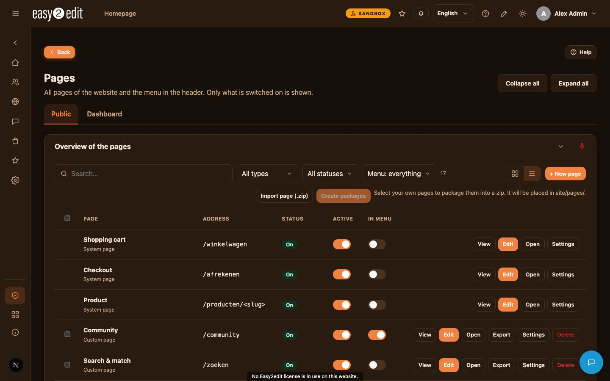
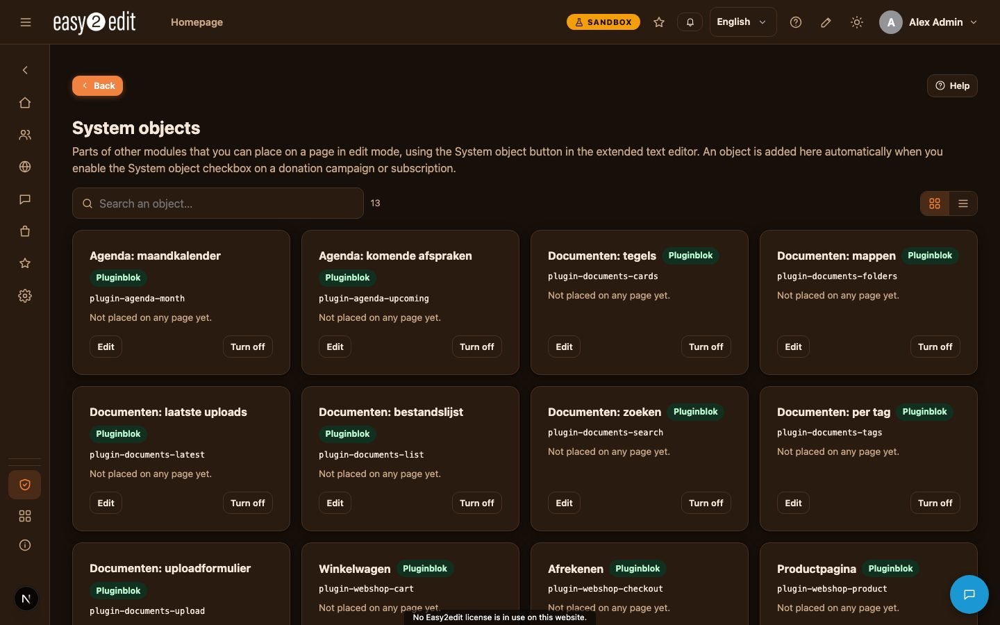

3. Pages, menu and edit mode
This chapter explains how pages and the menu are organised in Easy2edit, and how edit mode lets you build and change pages directly on the screen.

Pages and menu overview#
All pages and menu items are managed under Admin > Pages. You will find three kinds of entries here:
- System pages: built-in pages such as Home and products.
- Own pages: text pages that live at an address such as /p/<key>.
- Links and menu items: entries that point elsewhere or structure the menu itself.

Page settings#
Each page has its own set of settings that control how it looks, who can see it and how it behaves in the menu.
- Names per language: you can set a different name for each language, and use AI translation to fill in the other languages automatically.
- Address per language: the web address of the page can also differ per language.
- Visibility: choose who may see the page - everybody, logged-in users, guests only, or specific users or groups.
- Menu visibility: decide whether the page should show in the header menu.
- Open in new tab: choose whether clicking the page opens it in the same tab or a new one.
- Devices: control whether the page is shown on desktop, tablet, mobile, or a combination.
- Page-specific theme/header/footer: a page can use its own theme, header or footer instead of the site-wide default.
- SEO per language: set SEO details separately for each language.
- Background: add a background image or video to the page.
Switching on edit mode#
To start editing a page directly on the screen, switch on the pencil icon in the header. This activates edit mode, which overlays editing tools on top of the live page.
How pages are built: rows, cells and items#
In edit mode, pages are constructed from rows, which act as horizontal blocks stacked on the page.
- Each row can be divided into cells, from 1 up to 4 columns wide.
- Each cell holds one or more items, placed through + Add.
Available items include:
- Heading
- Text (rich text editing)
- Image
- Button
- Spacer
- Line
- System objects
- Ready-made parts: contact data, social media, map, video, quote, figures, logo, opening hours
- HTML / CSS code
Row settings#
Click the gear icon in the corner of a row to open its settings. From here you can control:
- Background colour, image or video
- Overlay
- Padding
- Width: column, wide or full screen
- Hero height
- Text colour
- Rounded corners
- Space above the row
Cell settings#
Each cell within a row has its own settings:
- Width
- Alignment
- Card style: background, border, radius and shadow
Text and button settings#
Text items can be styled individually:
- Style, size, colour and font
- Padding
- Background, shown as a label or pill
Buttons have their own set of options:
- Label per language
- Link
- Style: primary, outline or ghost
- Colours
- Size
- Icon
The HTML / CSS code part#
For advanced customisation, the HTML / CSS code item opens a large pop-up with three tabs: Visual, HTML and CSS.
- In the Visual tab, you click directly into the text and type, seeing the result exactly as it will appear (what you see is what you get). A toolbar offers bold, italic, underline, list, link and clear formatting, plus a switch between a light and dark background for the editing area.
- The HTML tab lets you edit the underlying markup directly.
- The CSS tab lets you add custom styling.
The code you add runs inside a sandboxed frame, meaning it has no rights on the rest of the site. This keeps your pages safe even when custom code is used.
System objects#
System objects are modular pieces such as donation buttons, subscriptions, media views, plugin parts and, for superadmins, AI dashboard blocks. Before they can be used, the relevant module must be switched on in Admin > System objects.
Once enabled, you can place a system object into a page while in edit mode via + Add > System objects.
Editing pages imported from HTML#
Pages that were taken over 1 to 1 from an HTML file, as described in the Site import process, behave slightly differently in edit mode. Every text and button on such a page shows a pencil icon.
- Click the pencil on the text or button you want to change.
- An editor opens showing the text as it appears on the page, with formatting options for bold, italic, underline and link. For buttons, you can also edit the link.
- Click Save to write your changes back into the page.
This approach lets you safely update imported HTML pages without needing to edit the underlying code directly.